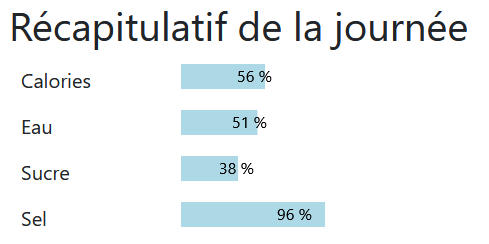
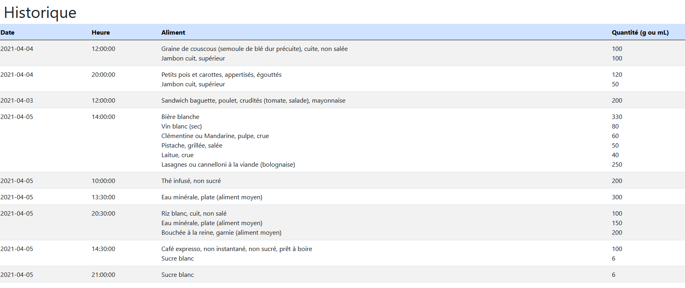
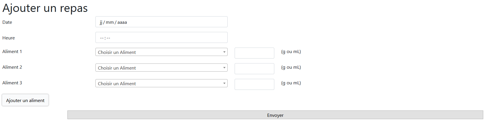

Accueil
La page d'accueil affiche les informations concernant la consommation du jour en cours. Elle permet de voir les apports manquants ou une éventuelle surconsommation.

Journal
Le journal affiche un tableau avec la liste des repas créés par l'utilisateur. Le formulaire permet d'ajouter un repas en sélectionnant un ou plusieurs aliments et leur quantité.


Aliments
Cette page affiche la liste des aliments contenus dans la base de donnée, avec leur apport en calories, eau, sucre et sel. La base contenant plus de 3000 entrées, une pagination a été mise en place.
Un formulaire permet également d'ajouter des aliments en base.


Profil
Le profil récupère les informations de l'utilisateur contenu en base. Il ne permet pas pour l'instant la modification des informations.